ISO 9001
Kvalitetsledelse
Avancert er et familieejet certificeringsselskab der leverer professionelle, uvildige og værdiskabende audits. Vi arbejder udelukkende med certificering og tilbyder hverken rådgivning eller undervisning. Det sikrer en uafhængig proces med fokus på faglighed, tillid og tæt dialog gennem hele forløbet.
✓ Én samlet pris for hele forløbet
✓ Få et uforpligtende tilbud
✓ De fleste virksomheder er certificeret inden for 1–3 måneder
Kundeudtalelser
“Avancert gør ISO-processen konkret og overskuelig. De er grundige, professionelle og gode til at stille de spørgsmål, der skaber reel værdi for forretningen.”
“Det var en positiv oplevelse at blive auditeret for første gang. Vi havde en god og konstruktiv dialog med Avancert om vores system.”
“Avancert er en professionel og pålidelig partner, der arbejder effektivt og med en rigtig god kommunikation på alle niveauer.”
KUNDER
Virksomheder store som små, og på tværs af mange forskellige brancher. Vi har gennemført over 2.000 audits, og ingen virksomheder har været ens. Det elsker vi. Se et lille udvalg herunder.
TÆNKER I PÅ AT SKIFTE?
Et akkrediteret certifikat kan overdrages til et andet organ — også imellem audits.
Vi gennemgår jeres auditrapporter og certifikater, og udsteder nye certifikater uden beregning.
Standarder


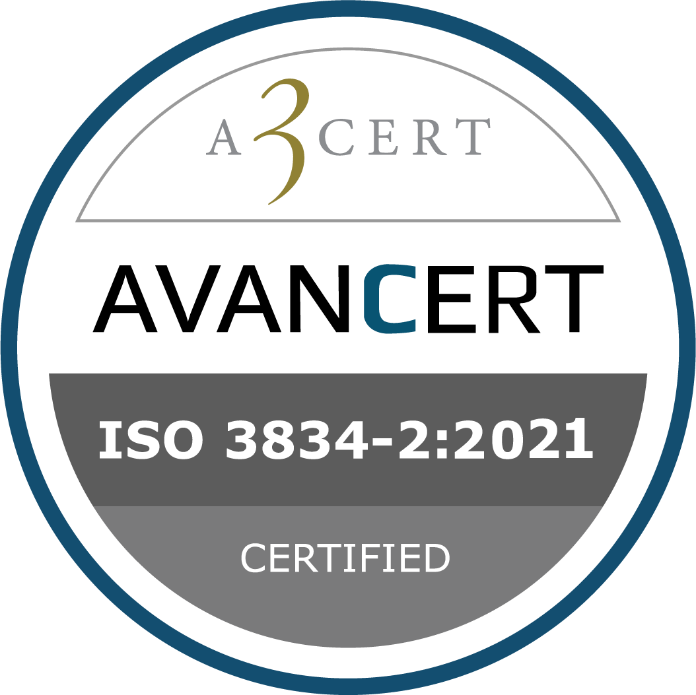

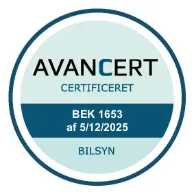
Om Avancert
Hos AVANCERT møder du erfarne auditorer med praktisk forståelse for virksomheder, drift og ledelsessystemer. Vi arbejder med tæt dialog og en effektiv proces fra start til slut.
AVANCERT arbejder udelukkende med certificering og tilbyder hverken rådgivning eller undervisning. Det sikrer en uvildig og troværdig certificeringsproces.
Vi auditerer — det er alt, vi gør. Vi rådgiver aldrig, konsulterer aldrig og har ingen bindinger. Det giver jer en 100% uvildig certificering, hver gang.
Avancert er en familievirksomhed uden eksterne investorer. Det giver os friheden til at prioritere faglighed, uvildighed og en ærlig dialog.
Vi tror på, at en god audit starter med god dialog. Vi lytter, tilpasser og gennemfører altid certificeringen med respekt for jeres virksomhed og hverdag.
Mindre afvigelser er en del af processen, og ikke noget vi opkræver ekstra for.
Mød teamet
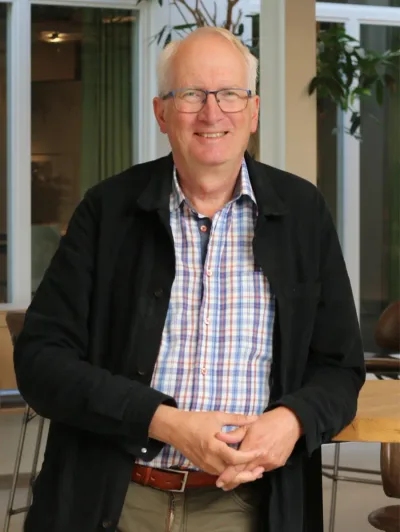
Ejerleder & Lead Auditor i ISO 9001, ISO 14001, ISO 45001, ISO 13485, DS 49001, DS 21001, ISO 3834 og EN 1090-1.
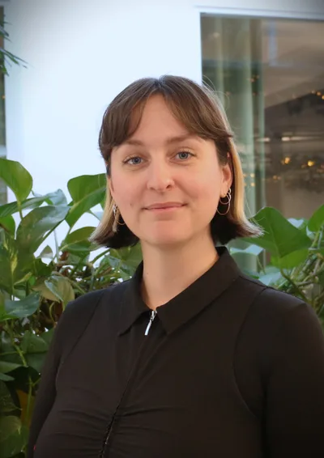
Lead Auditor Trainee i ISO 9001, ISO 14001 og ISO 45001, samt ansvarlig for planlægning, salg og IT.
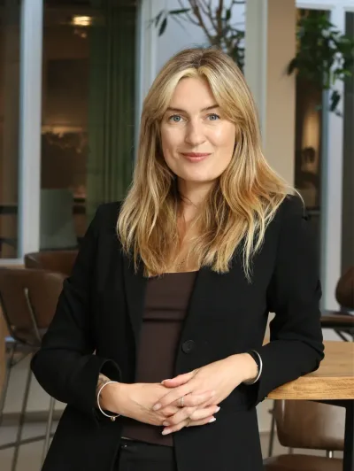
Lead Auditor Trainee i ISO 9001 og ISO 14001.
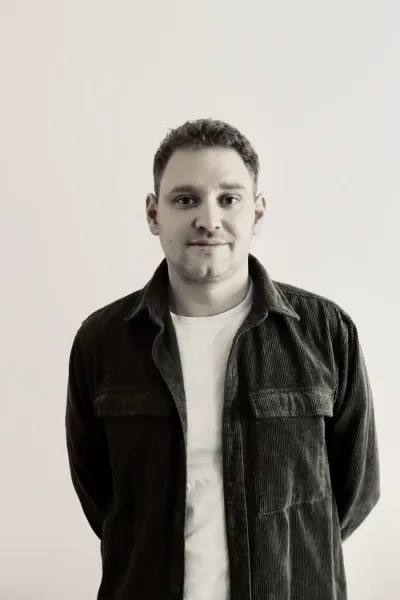
Lead Auditor Trainee i ISO 9001 og ISO/IEC 27001 samt ansvarlig for IT, AI og digital udvikling.
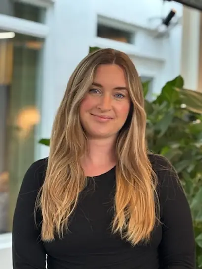
Lead Auditor i ISO 9001 og Trainee i ISO 14001.
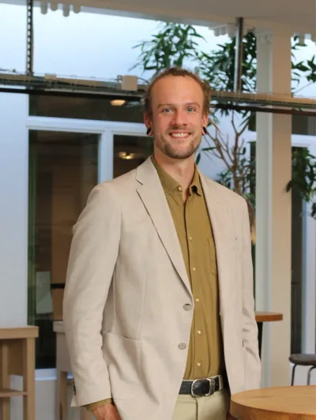
Lead Auditor i ISO 9001 og Trainee i ISO 14001.
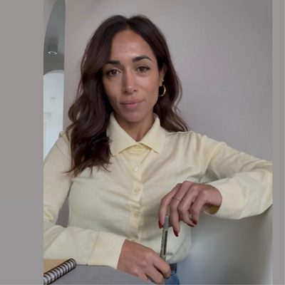
Auditor Trainee i ISO 9001 og ISO 14001, samt ansvarlig for bogholderi.
Programme Manager og Lead Auditor for bilsynshaller, samt ansvarlig for tilbud.
Lead Auditor i ISO 9001, ISO 14001, ISO 45001 og ISO 13485.
Erfarne freelance-auditorer tilknyttet Avancert.
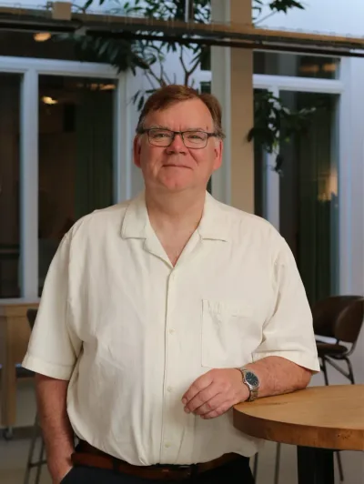
Lead Auditor i ISO 9001, ISO 14001, ISO 45001, DS 49001 og bilsynshaller.
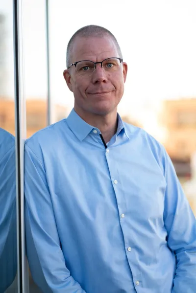
Lead Auditor i ISO 9001, ISO 14001 og ISO 45001.
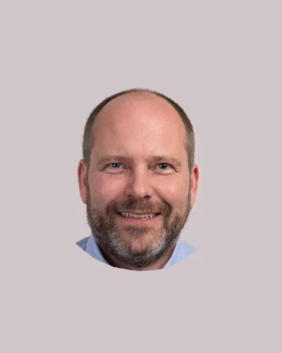
Lead Auditor i ISO 9001, ISO 14001 og ISO 45001.
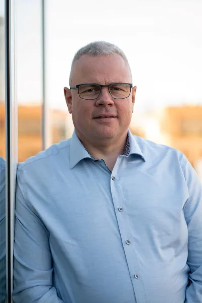
Lead Auditor i ISO 9001, ISO 14001 og ISO 45001.
Lead Auditor i ISO 3834 og EN 1090-1.
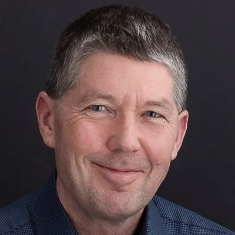
Lead Auditor i ISO 9001, ISO 14001 og ISO 45001.
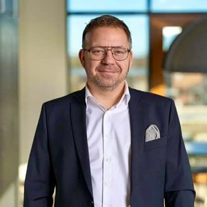
Lead Auditor i ISO 9001 og ISO/IEC 27001.
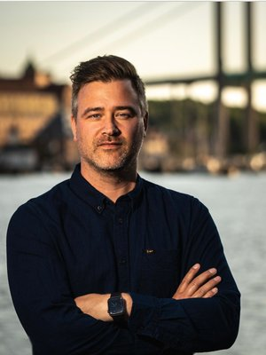
Lead Auditor i ISO 9001, ISO 14001, ISO 27001 og ISO 45001.
Proces
Certificering behøver ikke være kompliceret. Vi guider jer gennem processen med tæt dialog, klare forventninger og en auditproces, der giver mening i praksis.
Vi afklarer jeres behov, standarder, organisation og tidshorisont.
I får et tydeligt oplæg og en plan, der passer til jeres virksomhed.
Vi gennemfører audit professionelt, effektivt og med tydelig kommunikation.
Certifikatet udstedes af vores samarbejdspartner AAA Certification AB i Sverige, som er SWEDAC-akkrediteret, når kravene er opfyldt.
Tilbud
Vi giver jer et uforpligtende tilbud. Vælg de standarder I er interesserede i, fortæl os lidt om jer selv og giv os dine kontaktoplysninger — vi vender tilbage hurtigst muligt.
Antal revisionsdage gange vores dagspris. Antal dage bestemmer vi ikke selv — det følger en international tabel efter jeres størrelse, lokationer, standarder og kompleksitet, og den er den samme hos alle akkrediterede organer. I får ét samlet tilbud for hele det treårige forløb.
Nye lokationer · Flere standarder · Væsentlig vækst i antal medarbejdere
Foretrækker du at tale med en auditor direkte?
Ring 36 16 36 16FAQ
Certificering er en måde at dokumentere, at din virksomhed arbejder struktureret, sikkert og i overensstemmelse med gældende krav og lovgivning.
En certificering skal ikke kun ses som et kvalitetsstempel — men som en investering i virksomhedens udvikling, effektivitet og konkurrenceevne.
Når en virksomhed certificeres, gennemfører et akkrediteret certificeringsorgan som Avancert en audit af virksomheden ud fra den relevante standard. Når auditten er gennemført og godkendt, udstedes certifikatet.
For nogle virksomheder er certificering et lovkrav. For andre er det en måde at styrke kvalitet, troværdighed og position på markedet.
En certificering skaber samtidig værdi internt i organisationen, fordi arbejdet med struktur, processer og forbedringer ofte fører til større overblik og bedre drift.
Vi tilbyder certificering inden for: ISO 9001 · ISO 14001 · ISO 45001 · ISO/IEC 27001 · DS 49001 · DS 21001 · ISO 3834 · EN 1090-1 · ISO 13485.
Kontakt os gerne, hvis I har spørgsmål til certificeringsprocessen eller de enkelte standarder.
Det afhænger af standard, virksomhedens størrelse, antal lokationer og hvor langt I er i arbejdet med ledelsessystemet. Vi hjælper med at afklare tidsplanen tidligt i processen, så forløbet bliver så smidigt og effektivt som muligt.
Nej. I er velkomne til at kontakte os tidligt, så vi kan afklare behov, proces og næste skridt. Vi udfører certificeringsopgaven og rådgiver ikke som konsulent.
Prisen er antal revisionsdage gange vores dagspris. Antal dage bestemmer vi ikke selv — det følger en international tabel efter antal medarbejdere, lokationer, standarder, branche og kompleksitet, og den er den samme hos alle akkrediterede organer. Derfor beder vi om nogle få oplysninger, før vi giver et konkret tilbud.
I får ét samlet tilbud for hele det treårige forløb. De mindste afvigelser, spørgsmål mellem audits og selve certifikatudstedelsen koster ikke ekstra.
Ja. Vi certificerer primært virksomheder i Danmark, men har også gennemført audits i Polen, England, USA, Frankrig, Indien, Norge og Grønland. Vi har erfaring med audits både til lands, til vands og i luften.
Afvigelser er en naturlig del af auditprocessen og behøver ikke betyde forsinkelse eller ekstra omkostninger. Minor afvigelser — som langt de fleste er — håndterer vi uden ekstra opkrævning. I får en klar tilbagemelding og mulighed for at lukke afvigelsen. Kun ved major afvigelser, som kræver en ekstra audit, tillægges et separat honorar.
Nej. Avancert arbejder uvildigt og fokuserer udelukkende på certificeringsopgaven.
Juridisk information og klager
Som akkrediteret certificeringsorgan er vi forpligtet til at gøre vores procedurer offentligt tilgængelige. Klik på et kort for at læse mere.
Klar til næste skridt?